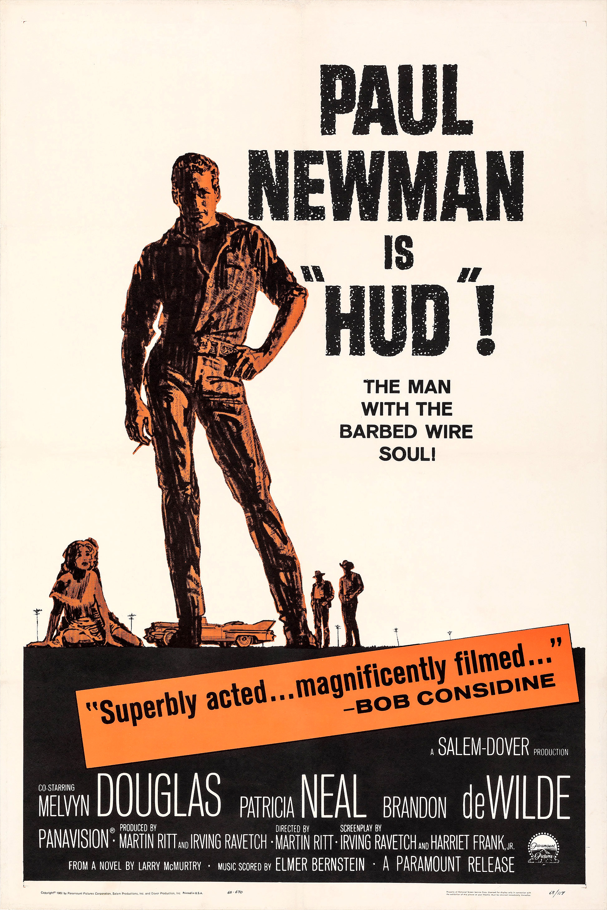

Hud
36th Academy Awards
(Oscars 1964)
7 Nominations, 3 Awards
| Nominations | ||
|---|---|---|
| Category | Nominees | Result |
| Actor | Paul Newman | Nominated |
| Actress | Patricia Neal | Won |
| Actor in a Supporting Role | Melvyn Douglas | Won |
| Directing | Martin Ritt | Nominated |
| Writing (Screenplay--based on material from another medium) | Harriet Frank, Jr. and Irving Ravetch | Nominated |
| Cinematography (Black-and-White) | James Wong Howe | Won |
| Art Direction (Black-and-White) | Hal Pereira, Robert Benton, Sam Comer, and Tambi Larsen | Nominated |